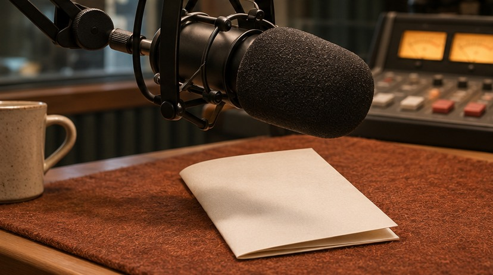
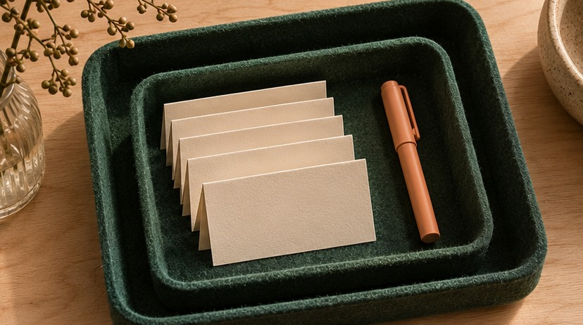
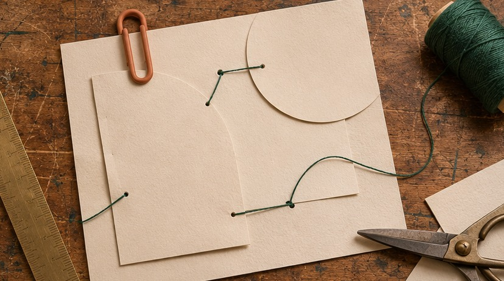
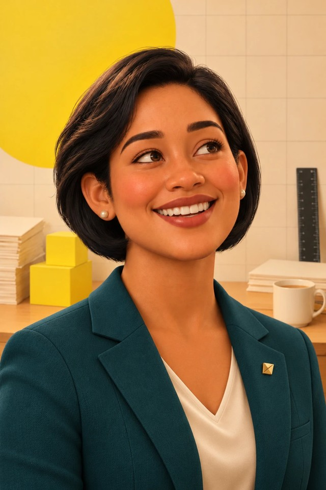
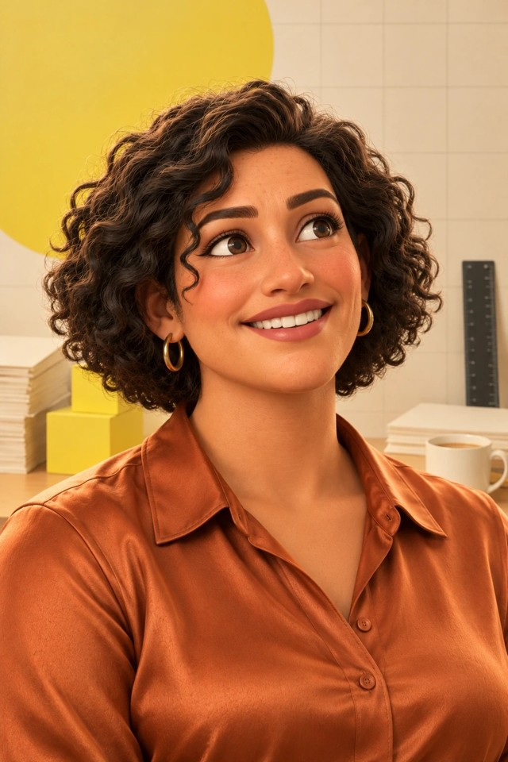

Treatment A / Identity study
The Working Seam
The work stays with the team.
Make the join visible. Wherever a person, an agent or a piece of work comes together, show who is acting and where the work belongs.

The work stays with the team.
Make the join visible. Wherever a person, an agent or a piece of work comes together, show who is acting and where the work belongs.
The first audience is a small group that already works together and wants to rely on agents for more than a one-off response. Matt’s team starts with Lola. Juan’s meeting participation, Milo’s show and Nando’s crew let other teams see different working styles through the same system. Let a practical handoff introduce Shared before asking anyone to learn the platform vocabulary.

Shared names the experience and 2lp names the runtime. A node is where an agent runs and a seat is a place an agent can use to do work. Lola’s own node and the dedicated seats for Matt’s team demonstrate the distinction. Put the 2lp vocabulary in a platform explanation, and use the names of people, agents and groups in everyday work.
Describe group-owned memory as the team’s record of work it chooses to retain. Separate ownership from attribution by naming the group that owns a record and the person or agent that supplied each contribution. When displaying a remembered detail, include its source when the system can supply one. The handoff should be intelligible to a colleague who missed the conversation.
A vertical binding edge pairs an active piece of work with its source, owner or next action. Draw it as one fine ink rule with a single short joining stitch where the relationship is described. In editorial layouts the seam may become a photograph’s paper fold or the edge of a felt insert. On work surfaces it becomes a quiet alignment rule with real labels beside it.
Meet the team.
Source Sans 3 / 0123456789Use four material studies to give the commissioned portraits the context of an actual job: a folded slide, work trays, a running order and a paper plan. Favor 35–50 mm perspectives, soft side light and clean but lived-in surfaces. Keep the portraits and photographs as independent assets. Compose each object with a quiet edge that can face a neighboring portrait.


Use the commissioned Juan portrait as the shared identity for Rooms, Juan Live and WhatsApp. Pair a roomy editorial crop with the folded slide photograph. Align the paper edge toward Juan so the two images suggest a contribution entering the conversation. Start with the original portrait for each crop and protect the details that make him recognizable.
Pair the commissioned Lola portrait with the overhead felt-tray photograph. The tray gap gives the design a visible separation where the caption can explain the relationship between Lola’s node and Matt’s team’s seats. Carry her original portrait into onboarding and team materials.
Set the commissioned Milo portrait alongside the paper running order and the felt booth photograph. His presence identifies the host, and the recording materials identify the work. Give the AI Engineers Barcelona name the strongest typographic position on show covers and credits.
Set the commissioned Nando portrait beside the overlapping paper plan. A slightly wider portrait crop gives the crew story a generous opening. Name the crew and a piece of shared work in the caption so Nando’s contribution stays grounded in the group.

Use short, active sentences. Name the actor first when reporting a change, name the owner when an action affects a group, and put the next decision where the reader can see it. Give agents a direct voice that reports a concrete contribution. In errors, describe the state and a supported action in everyday language.
Agent turn: “I brought the project slide into Rooms.” Attributed event: “Juan added the project slide to the room.” Draft button hierarchy: “Open slide” followed by “View room
Oat is the uncoated page, ink is for reading and structure, spruce anchors Shared and the primary action, and clay marks physical touchpoints or editorial emphasis. In UI, give each semantic state its own word and glyph. Keep clay out of small text on oat. Use an oat label on spruce when a primary button needs a filled treatment.
Use Instrument Serif for a short editorial headline and Source Sans 3 for the product and all continuous reading. Sentence case keeps controls and notes readable. Large titles may break at a spoken pause. Keep actor, action and object together in UI labels and use tabular numerals for timeline times.
Meet the team.
Source Sans 3 / 0123456789Set Shared in Source Sans 3 Semibold with a restrained bookbinding stitch near the capital S. The standalone mark consists of two parallel paper edges joined by a diagonal stitch. Output one-color ink and reversed oat masters for small placements. Keep felt grain and paper shadows in photography and large editorial planes, where they stay clear of controls.
In the Rooms design study, every contribution should read as a row of actor, object and action. The asset and the actor sit together so attribution survives a narrow screen or a long discussion. Identity labels distinguish people and agents in text independently of the images. One primary action follows the item, with keyboard focus following the reading order.
Write separate copy for a request in progress, a teammate with no access and an unavailable agent. Announce asynchronous changes close to the work and through assistive technology. Reserve success copy for confirmed changes. If delivery cannot be confirmed, refer to the pending item and give the next action only when it is available.
Motion links cause and effect. A new asset can enter at the binding edge and settle inline while the row retains its place. Preserve keyboard focus and announce the completed state independently of animation. Stack the asset’s title, attribution and action on small screens so relationships survive when the seam becomes horizontal.
Juan’s Rooms, Juan Live and WhatsApp identities use the same name and commissioned portrait. Adjust the crop and supporting copy to the channel, and say what the person can do in that interaction. Show group context wherever the channel and permissions support it. On Milo’s podcast, let the show title lead and carry Shared through restrained production credit.
Start with Matt and Rafa leading a short team session, an attributed Rooms slide and a worked group-memory example. Give them a one-page teaching sheet, a compact identity pack and the states the team will encounter. Use mock data wherever a workflow is still a design study. Review whether a newcomer can identify the actor, owner and next action before moving the system into more team surfaces.
Keep the original image, name and identifying details together. A portrait identifies a character. Current responsibilities belong in the accompanying copy.


Keep the original image, name and identifying details together. A portrait identifies a character. Current responsibilities belong in the accompanying copy.




The seam connects an author to the work. Keep the attribution beside the asset and the audience beside the action.